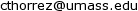

If you have learned about unsupervised learning or clustering, chances are one of the first methods you learned is k-means clustering. K-means is a way to group points of data into discrete bins based on their similarity to each other. If you have a data set and you suspect that there is some underlying structure where it could be useful to group similar points together and you have an idea of how many groups you want to seperate the data into, k-means is simple, (pretty) fast and effective if the data doesn't violate some mathematical assumptions. The idea of grouping similar points together can be accomplished by minimizing the following loss function. $C_i$ represents the set of points currently assigned to cluster $i$.
$$L = \sum_{i=1}^k \sum_{\mathbf{x} \in C_i} \frac{1}{2} \lvert \lvert \mathbf{\mu}_i - \mathbf{x} \rvert \rvert^2$$
This is the sum over all clusters, over all points in that cluster, of the squared distance between that point and that cluster's centroid. The $\frac{1}{2}$ is just a constant factor which does not change the solution but makes the derivatives cleaner.
The standard algorithm for performing k-means clustering and minimizing the above loss function is called Lloyd's algorithm which is actually an example of expectation maximization. The algorithm is fairly simple with only a few steps.
It occurred to me in class at some point that most of the supervised learning method I know about also involve minimizing a loss function but they go about it in a very different way. Most commonly, you compute the gradient of the loss with respect to adjustible parameters and then update the parameters in the opposite direction of the gradient. This was a very different setup from the common k-means optimization method and I wondered why that was. At first I thought it was because assigning points to clusters is a discrete operation whereas the parameters in a logistic regression, linear svm or neural network are continuous so the same optimization techniques might not be applicable. However I then realized that in Lloyd's algorithm, the assignments are not actually what we are optimizing. We are optimizing the locations of the centroids which are continuous and the assignments are just a function of the data and the centroids. After a little investiation I found a stack overflow thread and a paper by Léon Bottou and Yoshua Bengio confirming that the k-means loss function is in fact differentiable with respect to the centroids and therefore should be optimizable via gradient descent. The equation for the gradient is given below. $$\frac{\partial L}{\partial \mathbf{\mu}_i} = \sum_{\mathbf{x} \in C_i} (\mathbf{\mu}_i - \mathbf{x}) = N_i\mathbf{\mu}_i - \sum_{\mathbf{x}\in C_i}\mathbf{x}$$ Where $N_i$ is the number of elements in cluster $i$. In gradient descent the new estimate for the centroid is calculated by subtracting the above gradient scaled by a small step size $\epsilon$ from the previous centroid estimate. In our case it looks liek this. $$\mathbf{\mu}_{i_{new}} \leftarrow \mathbf{\mu}_{i_{old}} - \epsilon N_i\mathbf{\mu}_{i_{old}} + \epsilon \sum_{\mathbf{x}\in C_i}\mathbf{x}$$ When we examine this equation we can interpret it quite nicely in the context of k-means. The first subtraction can be seen as a scaling of the old mean. $$\mathbf{\mu}_{i_{old}} - \epsilon N_i\mathbf{\mu}_{i_{old}} = \mathbf{\mu}_{i_{old}}(1 - \epsilon N_i)$$ If the step size is smaller than $\frac{1}{N_i}$ (It is usually a very small number so this is satisfied in my experiments) then the scaling is a shrinkage. The second part, $\epsilon \sum_{\mathbf{x}\in C_i}\mathbf{x}$ is the addition of the sum of all points in the cluster scaled down by the step size. This makes sense when you recall that the sum of all points is just a rescaling of the mean of all points. So whereas in Lloyd's algorithm, the new centroid is exactly the mean of the points, in gradient descent, the old centroid is scaled down, and then takes a small step in the direcion of the mean of the points. Given this interpretation of the update, it makes sense that with a sufficiently small step siz, that gradient descent would also reach a local minimum of the loss function but in more iterations because it makes a smaller step towards the same target as Lloyd's alorithm. It could theoretically reach a different minimum from Lloyd's algorithm as the direction of update could be different from Lloyd's based on a different assignment as a result of the centroids differing due to the smaller initial update.
Another really interesting thing I learned in the Bottou and Bengio paper was that Lloyd's algorithm is actually closely related gradient based optimization methods. In fact it is mathematically identical to Newton's method. Traditionally Newton's method is a way of finding roots of a function, when applied to the derivative of a convex loss function, the root is the location of the minimum so it is also very useful in optimization. Newton's method uses the secon derivative of the function to be able to take the curvature of the loss surface into account and make more direct updates. In general it can converge in many less iterations than gradient descent however, each iteration involves computing and inverting the Hessian matrix which can be prohibitively expensive if the dimensionality is high. The Newton's method update is shown below where $\mathbf{H}$ is the Hessian of $L$ with respect to the centroids. $$ \mathbf{\mu}_{i_{new}} \leftarrow \mathbf{\mu}_{i_{old}} - \mathbf{H}^{-1} \frac{\partial L}{\partial \mathbf{\mu}_i} $$ The first term in the update is the same gradient we used above in gradient descent, the second term, the Hessian is a $dk$ by $dk$ matrix of partial second derivatives where $d$ is the dimensionality of a single point and $k$ is the number of centroids. This is because $dk$ is the number of free parameters since there are $k$ centroids and each one is the same dimensionality as a normal data point. The Hessian is a square matrix where each element is the second derivative of the loss. In the $i$th row and $j$th column, the Hessian is the loss differentiated once with respect to the $i$th parameter, and again with respect to the $j$th parameter.
To try not to get too confused about notation I'll clarify a few things here. I have been using $\mathbf{\mu}_i$ to refer to a $d$ dimensional single centroid vector. So the entire set of parameters is $dk$ as there are $k$ of these centroid vectors. For the next equation I will use $\mathbf{M}$ to represent a flattened vector of all parameters. It is a concatenation of all of the centroid vectors. The subscript $i$ was previously between $1$ and $k$ and identified a cluster. In this equation subscripts $i$ and $j$ range from $1$ to $dk$ and each identify a single element of $\mathbf{M}$. Since the Hessian is $dk$ by $dk$, together $i$ and $j$ index one element of $\mathbf{H}$. $$\mathbf{H}_{i,j} = \frac{\partial L}{\partial \mathbf{M}_{i} \partial\mathbf{M}_{j}}$$ So lets think about what these derivatives look like. Remember the first derivative with respect to $\mathbf{\mu}_i$ is: $$\frac{\partial L}{\partial \mathbf{\mu}_i} = N_i\mathbf{\mu}_i - \sum_{\mathbf{x}\in C_i}\mathbf{x}$$ Essentially to get the Hessian, you would take the derivatives of each element of each gradient with respect to each parameter. When doing this the second term, the sum of $\mathbf{x}$'s entirely disappears. For the $N_i\mathbf{\mu}_i$ part it depends on which parameter you are differentiating with respect to. If you are diffentiting with respect to a different parameter than the one the first derivative was taken with respect to, the result is 0. However if you are evaluating the loss with respect to the same parameter twice, the result is $N_i$. That is, the count of the points in that cluster. This is because the first derivative is $N_i\mathbf{\mu}_i$ which is just multiplying each element of the centroid by a constant, so the derivative of each element of the resulting vector is just that constant. So the resulting Hessian is a diaonal matrix with cluster counts on the diagional. $$\mathbf{H} = \begin{bmatrix} N_1 & 0 & \dots & 0 & 0 \\ 0 & N_1 & \dots & 0 & 0 \\ \vdots & \vdots & \ddots & \vdots & \vdots \\ 0 & 0 & \dots & N_k & 0\\ 0 & 0 & \dots & 0 & N_k \end{bmatrix} $$ In this example Hessian, the points are in two dimensions, so each count appears twice on the diagonal. In general $d$ dimensional cases each count will be repeated $d$ times on the diagonal.
Now that we have the Hessian, we can move forward. The next step is inverting the Hessian. This is actually really easy in this case because the inverse of a diagonal matrix can be calculated just by inverting each diagonal element. $$\mathbf{H}^{-1} = \begin{bmatrix} \frac{1}{N_1} & 0 & \dots & 0 & 0 \\ 0 & \frac{1}{N_1} & \dots & 0 & 0 \\ \vdots & \vdots & \ddots & \vdots & \vdots \\ 0 & 0 & \dots & \frac{1}{N_k} & 0\\ 0 & 0 & \dots & 0 & \frac{1}{N_k} \end{bmatrix} $$ Matrix vector multiplication with a diagonal matrix is also easy. It's just a dot product of the diagonal elements of the matrix and the vector. So when multiplying the gradient by the inverse Hessian, you just divide the gradient by the appropriate $N_i$. Thus the update equation for a single mean is: $$\mathbf{\mu}_{i_{new}} \leftarrow \mathbf{\mu}_{i_{old}} - \frac{1}{N_i} N_i\mathbf{\mu}_{i_{old}} + \frac{1}{N_i}\sum_{\mathbf{x}\in C_i}\mathbf{x}$$ Now you can see the $\frac{1}{N_i}$ and $N_i$ cancel out to $1$. This allows the two $\mathbf{\mu}_{i_{old}}$s to cancel out to $0$ leaving only $\frac{1}{N_i}\sum_{\mathbf{x}\in C_i}\mathbf{x}$, which is the mathematical equation for the mean of the elements in the cluster. So in all of that work in deriving the gradient, deriviving and inverting the Hessian, and applyin Newton's method of optimization we ended up with just taking the mean, which is exactly where we started with Lloyd's algorithm.
With all of the math done, I thought it would be fun to put the theory to the test and actually implement k-means clustering using gradient descent and Newton's method. I made pytorch Modules which had the cluster centroids as free parameters and the forward pass computes the loss. Then because autograd is awesome, I can get the gradient of the loss with respect to the centroids easily. Then to construct the Hessian, I take the gradient of each element of the gradient with respect to the centroids. The gradient of each element returns a row which I stack into matrix. If you are interested in the implementation details I've made the code available here.
First I wanted to test if the gradient descent and Newton's method verion of k-means even worked so I clustered the s1 dataset above using all three methods.
To test the convergence properties of the various optimization methods I plotted their losses per at eah iteration on 4 data sets. The s1 data set shown above and the s2, s3, and s4 data sets as well. They are all 2 dimensional data sets with 15 clusters. The difference is that they have increasing amounts of noise and overlap between clusters. These datasets were made available by some researchers in Finland here.
There is something especially interesting about the last data set. On the s4 data set, the gradient descent algorithm takes a very different optimization path than the other two algorithms. In this case even at the same iteration number gradient descent passes the other methods and has a better loss at some points before Lloyd's/Newton's pulls ahead at the end. This isdue to the phenomenon mentione above where the smaller gradient update can lead to different assignments and different future updates between the algorithms. In this case the gradient descent method actually converges to a different local minimum than Lloyd's/Newton's.
So we saw that in most cases, Newton's method and Lloyd's Algorithm converge in less iterations than gradient descent, but the compute cost per iteration is different for the three methods so I though I would do an experiment on the wall clock time it takes to fit the means with each algorithm. I testing fitting each algorithm on 5 data sets, each with 1024 data points, 16 clusters and varyin dimensions. They all follow the same general cluster distribution but in dimensions 8, 16, 32, 64, and 128. (I actually tried with 256 dimensions as well but the Hessian in Newton's method used all my memory and crashed my computer.)
The k-means loss function can be minimized by gradient descent and Newton's method, however it is computationally much more expensive and does not offer many benefits. The step size of gradient descent can also cause optimization to reach a different local minimum from Lloyd's algorithm or Newton's method even if they all start with the same initialization. Overall, even if they were not effective, I had a lot of fun implementing k-means using gradient descent and Newton's method. I also learned some cool tricks in pytorch to be able to take higher order derivatives, brushed up on my object oriented programming while making inherited KMeans classes, practiced my multiprocess programming by parallelizing fitting of different initializations. Working on this project also helped me appreciate the mathematical depth in one of the simplest algorithms in machine learning by seing how it realated to other concepts in machine learning and optimization. If you are still curious about the details you can check out the code here or feel free to shoot me an email at .